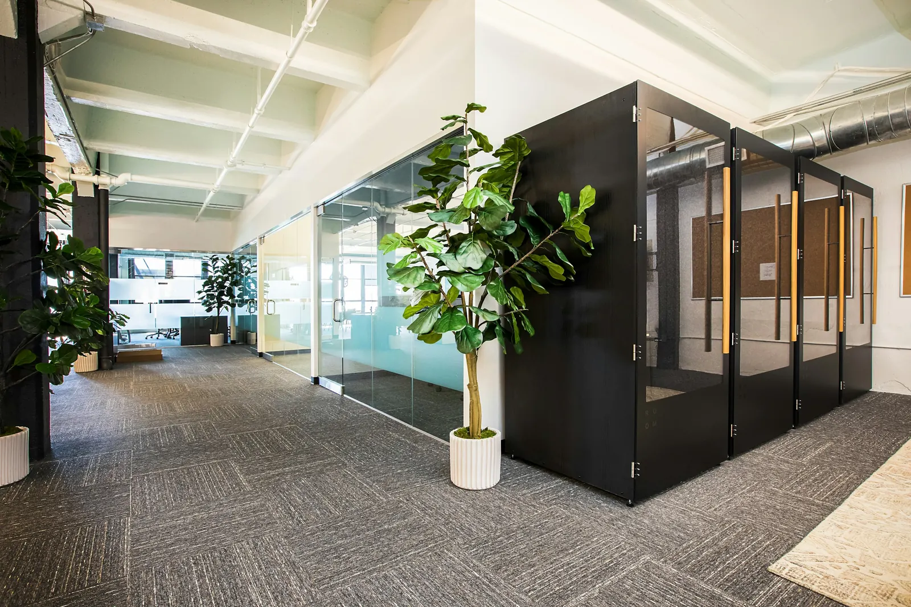
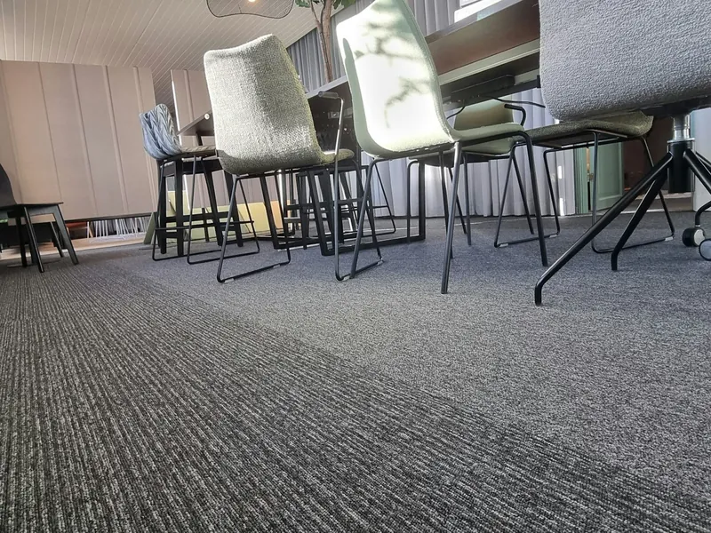

- Home
- Projectstoffering
Inrichting voor kantoor en bedrijfspand
Dezelfde vloeren, raambekleding en afwerking als voor uw woning, nu voor uw zakelijke pand.
Alles voor uw pand onder één dak
Voor kantoren en bedrijfspanden leveren we wat we ook voor woningen doen. U heeft één aanspreekpunt voor het hele project.
Vloeren
PVC wordt vaak gekozen voor projectstoffering: door de sterke slijtlaag gaat de vloer jarenlang mee zonder erg te beschadigen.
Raambekleding
Gordijnen, DUO rolgordijnen en houten jaloezieën, ook voor kantoor en bedrijfspand.
Zonwering
Bijvoorbeeld screens voor een kantoorpand met veel ramen, geleverd en gemonteerd.
Wand en plafond
Stucwerk en schilderwerk, zodat de ruimte klaar is om in te richten.

We komen eerst kijken
Elk pand is anders. Vertel ons wat u zoekt: in de showroom of op locatie bespreken we de mogelijkheden. Daarna ontvangt u een vrijblijvende offerte.
- Inmeten op locatie
- Vrijblijvende offerte
- Uitsluitend bekende merken
Uw pand bespreken?
Bel ons of plan een afspraak. We denken mee over vloer, raam en wand.
- Maandag
- 09.00-21.00
- Dinsdag
- 09.00-21.00
- Woensdag
- 09.00-21.00
- Donderdag
- 09.00-21.00
- Vrijdag
- 09.00-18.00
- Zaterdag
- 10.00-17.00
- Zondag
- gesloten
Uitsluitend op afspraak. De Vutter 23a, 5221 BD ’s-Hertogenbosch.